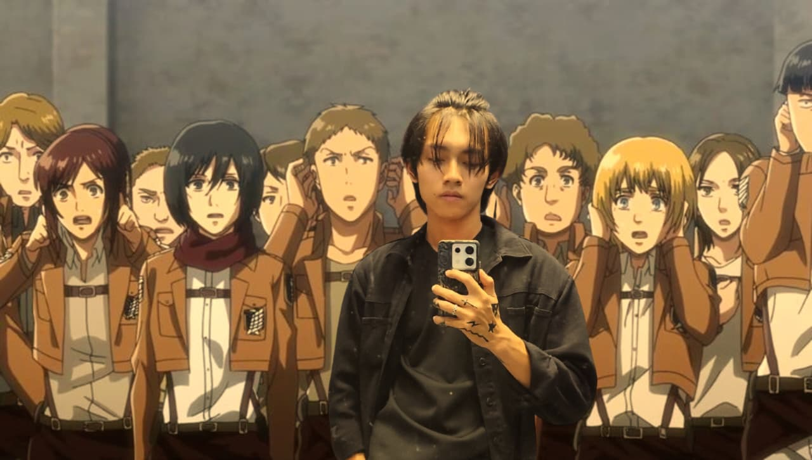

Website Toko Online
Eksplorasi antarmuka e-commerce dengan fokus pada kemudahan navigasi katalog produk dan kejelasan informasi belanja.
Halo, saya Muhammad Al Faruq, mahasiswa Sistem Informasi di Universitas Kebangsaan Republik Indonesia (UKRI). Saya tertarik membangun proyek digital yang praktis, memahami cara kerja sistem, serta menghubungkan kebutuhan bisnis dengan solusi teknologi.

Eksplorasi antarmuka e-commerce dengan fokus pada kemudahan navigasi katalog produk dan kejelasan informasi belanja.
Prototipe sistem berbasis web untuk mencatat antrean perbaikan, memantau pengerjaan teknisi, dan mengecek status servis.
Perancangan halaman promosi digital yang menyajikan nilai produk, ringkasan fitur unggulan, dan tata letak responsif.